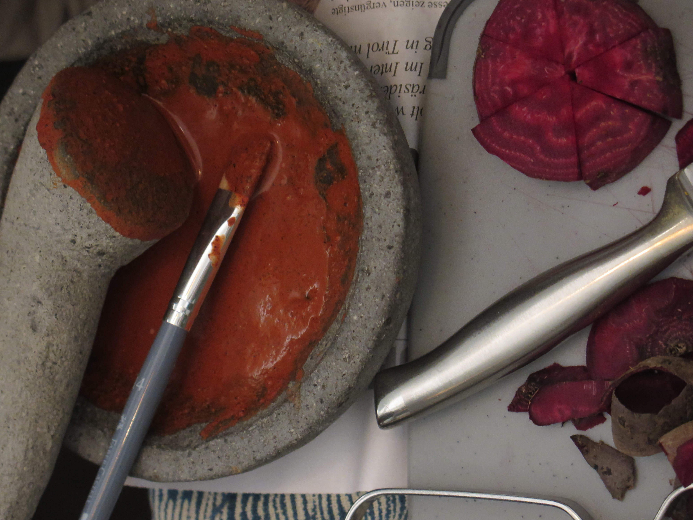
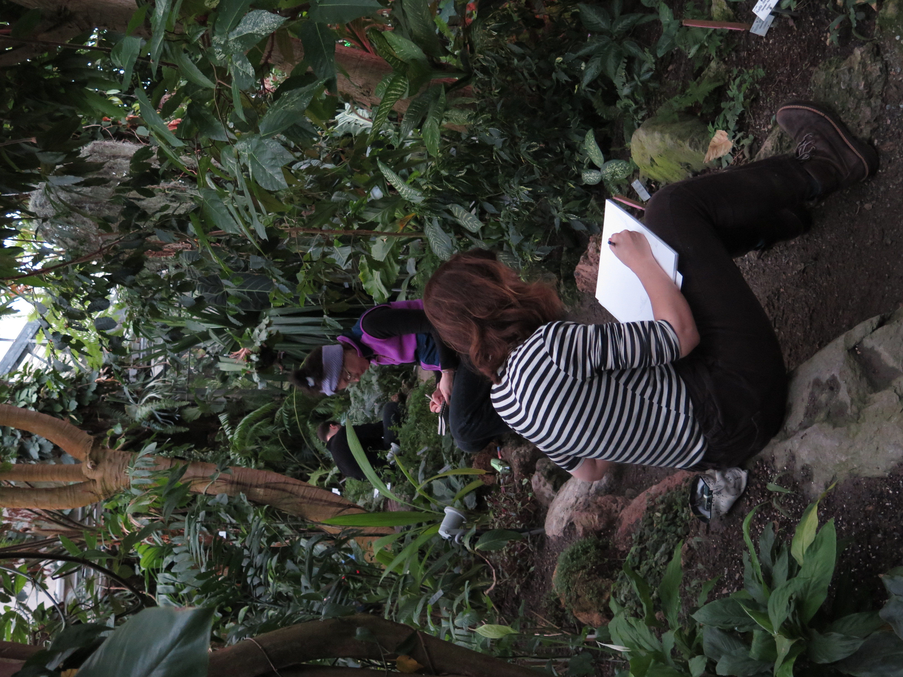

Im Café Spiral

Im Botanischen Garten
Über die Workshops
Meine Workshops verbinden Beobachtung, kreative Techniken und den Austausch mit Gleichgesinnten. Ob im gemütlichen Café Spiral oder im Botanischen Garten – jeder Workshop ist eine Einladung, die Natur genauer zu entdecken und sie künstlerisch umzusetzen.
Vorkenntnisse sind nicht erforderlich. Neugier und Lust am Zeichnen sind das Wichtigste!